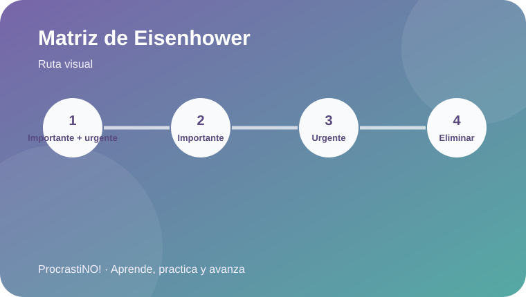
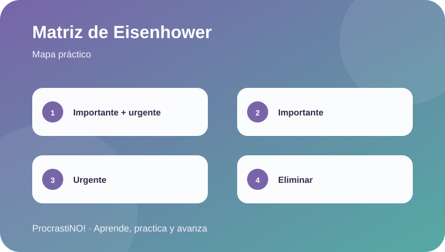

Módulo 2 · 2
Matriz de Eisenhower
Clasifica las tareas según su urgencia e importancia para decidir qué hacer primero.


Cuatro decisiones posibles
La matriz organiza las tareas en cuatro cuadrantes: hacer ahora, planificar, delegar cuando sea posible y dejar para después lo que tenga menor prioridad.
🔥 Urgente + importante
📅 No urgente + importante
🤝 Urgente + delegable
🕊️ No urgente + no importante
Idea clave:
La clave es evitar que todo parezca urgente: revisa prioridades antes de reaccionar.
▶ Ver explicación de Eisenhower en YouTube
Referencias
- EISENHOWER. (2012, September 2). The Eisenhower Matrix: Explained in 2 Minutes [Video]. YouTube. https://www.youtube.com/watch?v=tT89OZ7TNwc